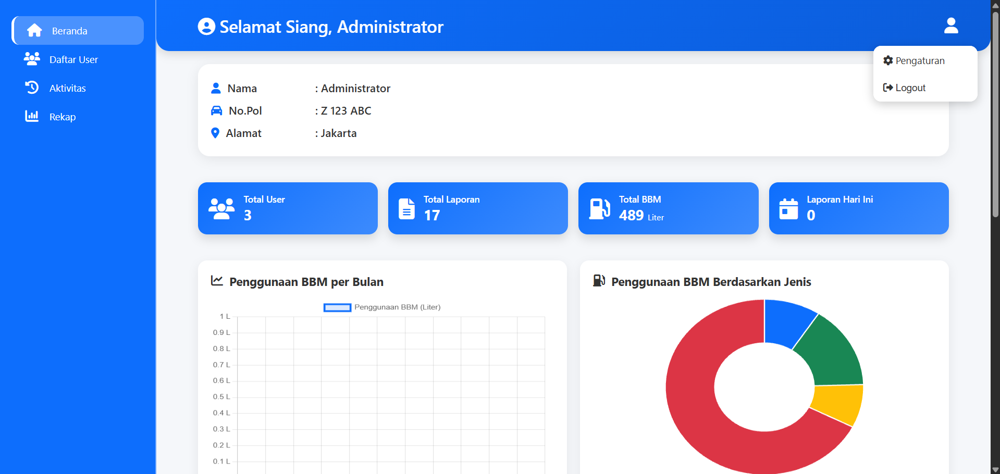

*Klik untuk memperbesar gambar
Aplikasi ini adalah sistem monitoring berbasis web yang dibangun dengan Laravel 12 dan PHP 8.2. Frontend dikelola menggunakan Vite, Tailwind CSS, dan axios, sementara server-side menggunakan arsitektur MVC Laravel dengan Blade untuk tampilan. Fitur tambahan termasuk pembuatan PDF dengan barryvdh/laravel-dompdf dan pengujian menggunakan phpunit.